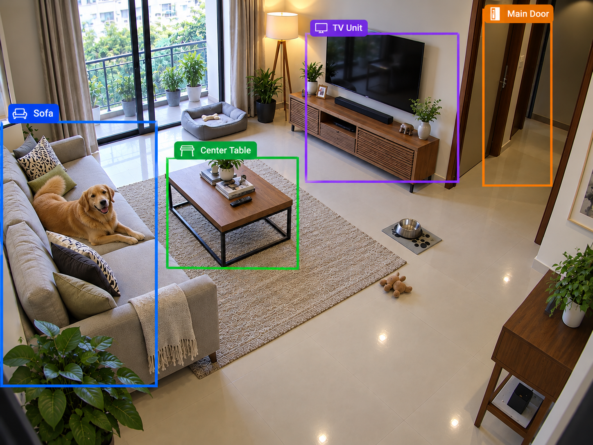
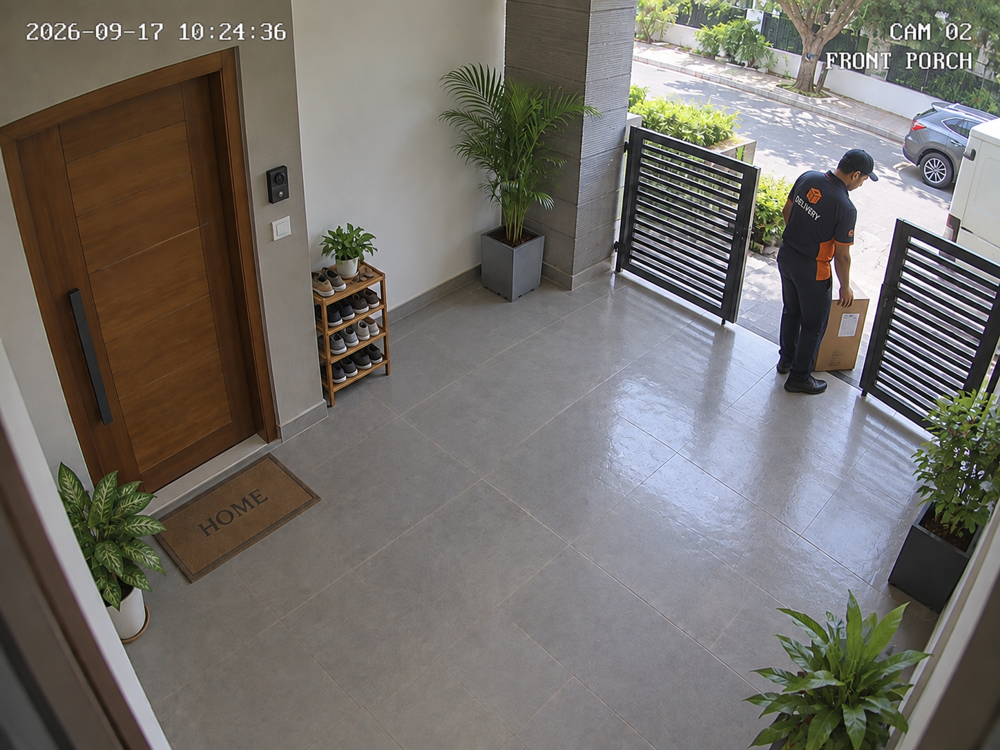

Looking for cameras on your network
Setting up JioSense for your home — this only takes a moment.
Setting up JioSense for your home — this only takes a moment.
Select cameras that you want to onboard.
Other camera providers
Still can't find your camera? Visit support
Sign in with your TrueView account to bring this camera into JioSense.

LivePick the room this camera is in.
Tell us who's around — it helps JioSense tell family from strangers.
Family members
Pets
What type of pet do you have?
Name your other pet(s) (optional)
Add typical working hours so we can give you smarter alerts.
Working days
Working hours
These timings help us alert you if this person arrives outside their usual hours. You can edit or remove them anytime from Settings.
By tapping Continue, you accept our Terms and acknowledge our Privacy Policy.
Cameras will automatically switch back on when the time is up.
Spin to pick the time cameras should switch back on.
3 alerts were missed while your phone was offline — caught up just now.
Always delivered — exempt from mute and quiet hours.
Only notify when JioSense's confidence is above your threshold.
If your phone was offline, we'll catch up on any alerts you missed the next time you open JioSense.
Active
All locations
Suggested by JioSense based on where movement happens most. You can still draw your own.
Choose where each feature runs — faster on your device, or smarter in the cloud.

JioSense has learned: household is usually asleep 11:00 pm – 6:00 am, front door is used 7–9 am and 6–8 pm.
JioSense will clear your household's routine and begin learning again. Your footage and account stay exactly as they are.
It will stop sending footage and alerts until you set it up again in JioSense.
This clears what JioSense has learned — your routines, labeled faces, and activity patterns. Your footage, cameras, and account stay exactly as they are.
This permanently removes your account, cameras, footage, and all household access. This can't be undone.
1 of 1
Tap to add a photo
Role
Maid / HousekeeperSelect relation

Quiet since 6:00 am. Last activity 12 minutes ago — Rohan checked in. No alerts in the last hour.
All locations
—
All locations
Patterns JioSense noticed that you may want to act on.
9 cameras · 7 live · 1 offline · 1 off
Control when your cameras process and alert.
Type
Priority